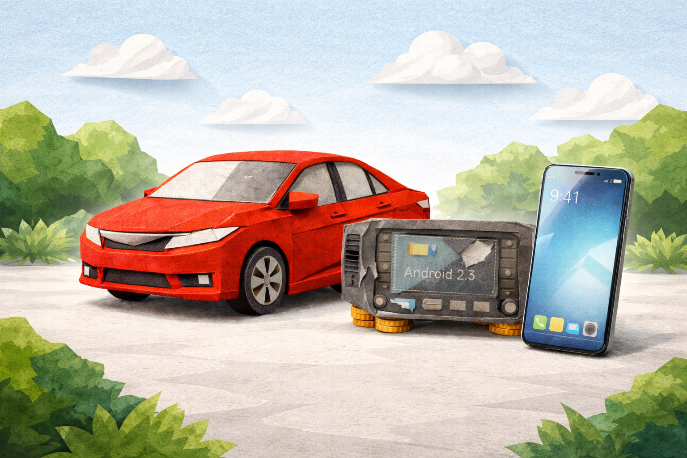
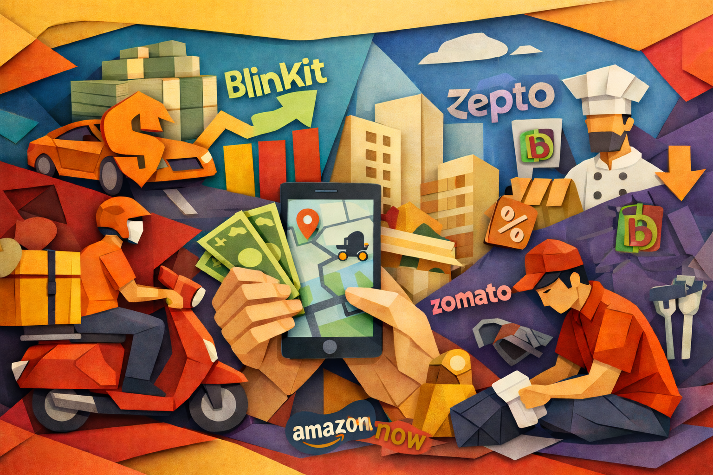
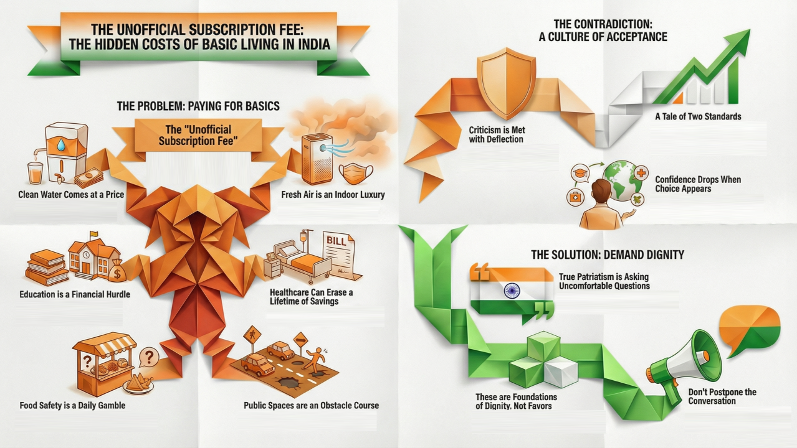
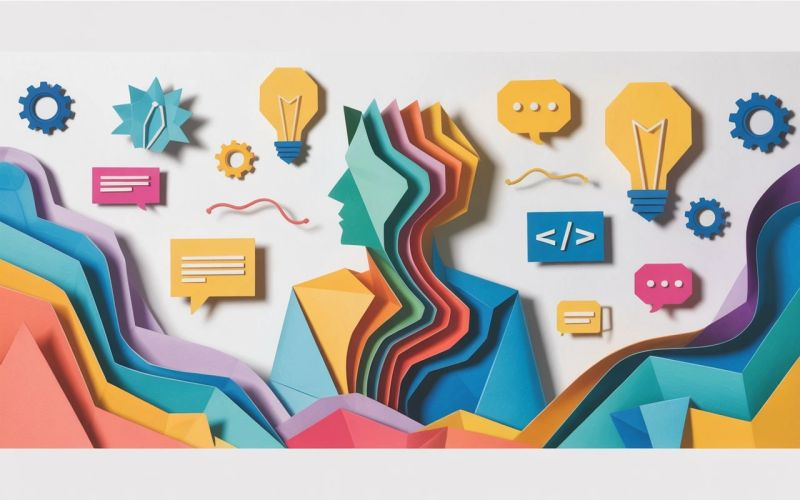
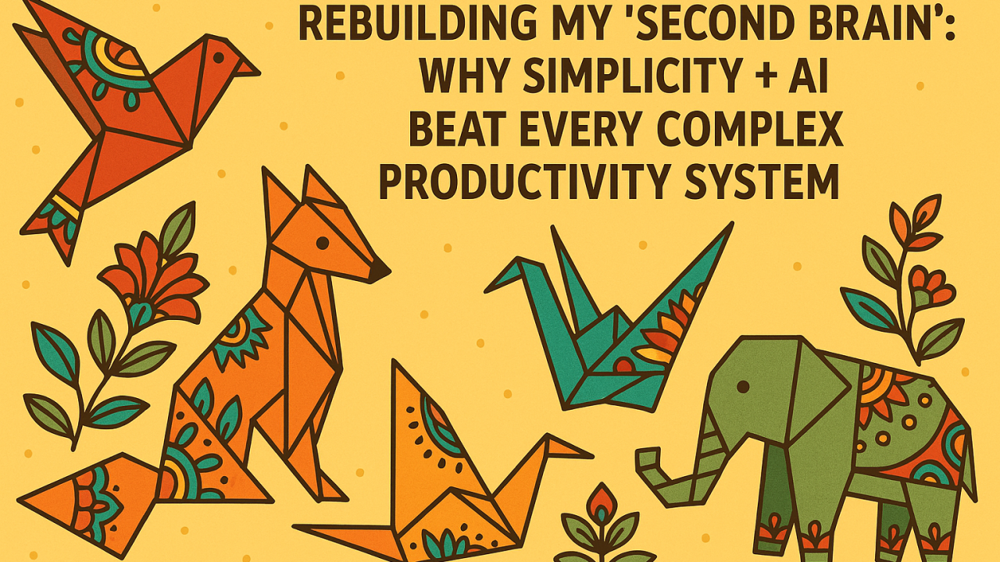
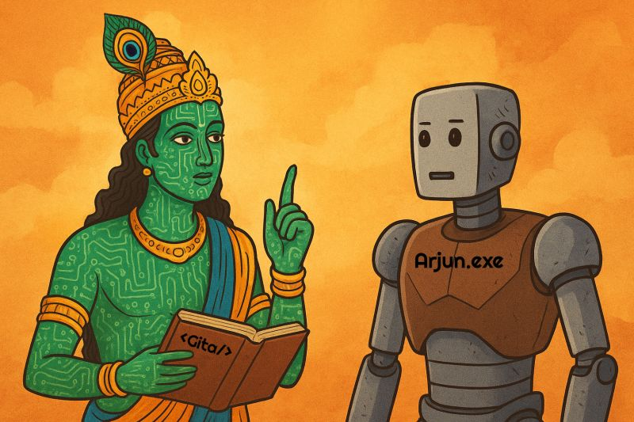
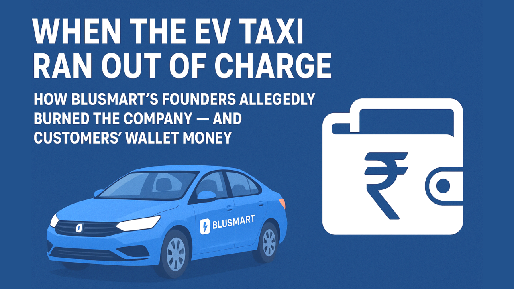
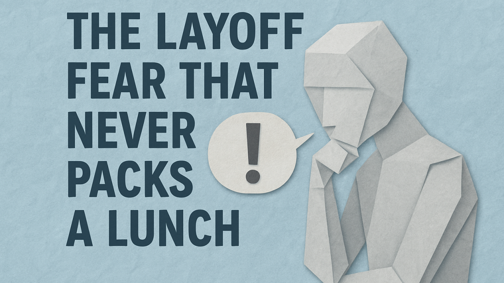

January 21, 2026 | Technology
The car doesn't feel old. It starts without complaint. The engine note hasn't changed.
Then, one day, you plug in your phone. The screen takes a second longer than usual. Maps
loads, but hesitates. Because the car is supposed to last.

January 17, 2026 | Technology
On most days, India's food and grocery delivery economy feels frictionless. You open an
app, scroll through familiar logos, place an order, and within minutes someone shows up
at your door. The transaction is clean. The interface is polished. The cost, at least on
the screen, appears modest.

December 30, 2025 | Personal
This is my last article of the year. Not a recap. Not a prediction. Not a lesson learned
post. This is the one thing I believe deserves the highest priority before we move on
and pretend everything is fine.

December 27, 2025 | Technology
At the start of this year, AI felt like that overachieving colleague who replies to
emails in thirty seconds and still has time for yoga. By March, it felt like that
colleague had cloned themselves and taken over half the building.
December 20, 2025 | Career
Every organization has that one invisible superpower. Not leadership. Not innovation. Not
strategy. Reliability. Once you demonstrate it, something fascinating happens.

December 17, 2025 | Career
There is something nobody tells you when you start your career. You think that working
hard and learning every day will bring clarity. You assume that skill will protect you.
But the truth is that most of us live with a quiet fear that stays just beneath the
surface.

November 27, 2025 | Technology
For years, I tried using few so called "perfect" productivity or PKM setup out there:
Notion, Obsidian, Roam, Evernote, you name it. Each time, I ended up over-engineering
the system instead of actually using it.

November 20, 2025 | Technology
I did something very brave last night. I tried watching the new AI-generated Mahabharat:
Ek Dharmayudh on JioHotstar. And I survived… for about 20 minutes. After that, my
neurons filed an HR complaint.

November 17, 2025 | Technology
Few weeks ago, I asked AI to write a thank you note for a friend's birthday, because
apparently, even gratitude needs automation now. That's when it hit me, I've officially
become the unpaid intern of my own AI tools.

October 17, 2025 | Technical Writing
Imagine if the Ramayan were written today. Not by Valmiki, but by a Technical Writer
armed with DITA XML, schema validations, and a 3 month release deadline.

October 11, 2025 | Technology
BluSmart was once the poster child for electric taxis in India: shiny EV fleet, charging
superhubs, big funding rounds, and press releases about millions of emission-free rides.
Then in early 2025, the lights went off.

October 1, 2025 | Career
Sometimes it doesn't feel like you're working in tech. Feels more like you're starring in
a thriller with a constant plot twist: "Are they about to let me go next?"

June 17, 2025 | Technical Writing
Most documentation teams underestimate what DITA really enables. They treat DITA as a
formatting tool, not an architecture...